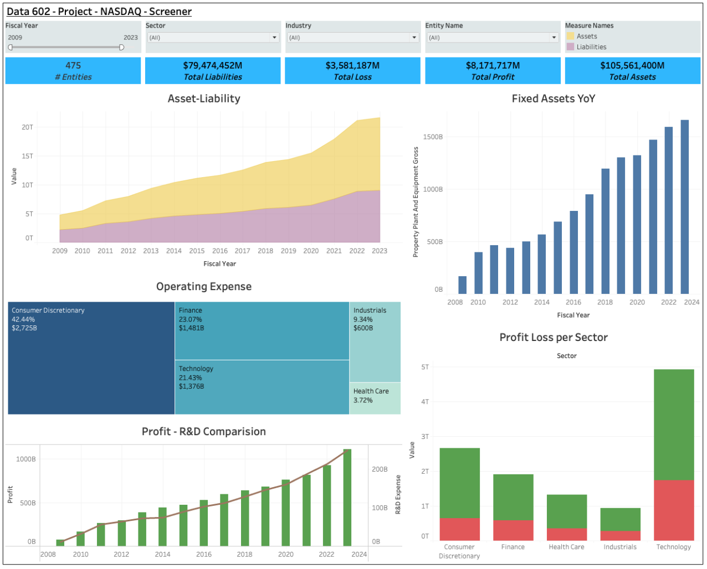

Financial Data Analytics Platform
Overview
The Financial Data Analytics Platform leverages data science and machine learning to analyze sectoral financial trends using data from the SEC EDGAR database. This project demonstrates how to transform raw financial data into actionable insights for stakeholders such as investors, policymakers, and business leaders.
Key Features
- Advanced Data Processing: Automates data curation and storage using Python and MongoDB.
- Interactive Dashboards: Visualizes insights with Tableau, highlighting trends, profitability, and risks.
- Machine Learning Models: Implements predictive analysis to forecast market trends and evaluate company performance.
- Summarization with LLMs: Uses OpenAI GPT models for summarizing complex 10-K filings.
Objectives
- Analyze financial data trends across sectors (e.g., Technology, Finance, Healthcare).
- Identify correlations between profitability, risk, and research investments.
- Present insights through interactive visualizations and dashboards.
Data Source
SEC EDGAR Database: Financial filings of publicly traded U.S. companies.
Key Metrics Analyzed
- Assets and Liabilities
- Profit and Loss
- Research and Development (R&D) Expenditure
- Sector-wise Trends
Methodology
- Data Collection:
- Extract financial data using Python scripts via the SEC EDGAR API.
- Store data in MongoDB for scalable storage.
- Data Processing:
- Clean and preprocess data to handle missing values and standardize formats.
- Engineer features like Asset-to-Liability Ratio and R&D-to-Profit Ratio.
- Visualization:
- Create dashboards using Tableau for insights on sectoral performance, profitability, and risk.
- Machine Learning:
- Train predictive models for market analysis.
- Validate trends with statistical tests and correlation analyses.
- Summarization with LLMs:
- Automate the extraction and summarization of 10-K filings using OpenAI GPT models.
Tools and Technologies
- Programming Languages: Python
- Database: MongoDB
- Visualization: Tableau
- Libraries: pandas, BeautifulSoup, LangChain
- APIs: SEC EDGAR API
- Machine Learning: Random Forest, Statistical Testing
Visualizations
- Asset-Liability Trends: Tracks growth from 2009 to 2024.
- Sector-wise Profitability: Highlights high-performing and struggling sectors.
- R&D vs. Profit: Shows correlation between research investment and profitability.
- Interactive Dashboards: Enables real-time filtering and dynamic insights.
Key Insights
- Technology Sector: Dominates profitability with high R&D investment.
- Consumer Discretionary: Faces significant financial risks despite high expenses.
- Financial Stability: High asset-to-liability ratios indicate robust performance.
Ethical Considerations
- Bias Mitigation: Normalized data across sectors to ensure fair comparisons.
- Transparency: Documented all preprocessing and modeling steps.
- Reproducibility: Publicly available code and datasets.
How to Run the Project
- Clone the repository:
git clone https://github.com/madhurlak0810/SEC-edgar.git
- Install dependencies:
pip install -r requirements.txt
- Setup MongoDB and OpenAI credentials
- Go through qualitative analysis and project checkpoints.
- Visualize the insights with Tableau or view pre-generated dashboards using the twbx file and Excel.
Interactive Notebooks
Notebook 1: Data Processing and Quantitative Analysis
Notebook 2: Qualitative Analysis
Tableau Dashboards
Dashboard 1: Financial Overview

Dashboard 2: Qualitative Analysis

MongoDB Data Storage
Our platform uses MongoDB for scalable and efficient data storage. Below is an illustration of the data storage architecture:

Contributions
- Madhur Lakshmanan: Data curation, preprocessing, and MongoDB integration and OpenAI integration.
- Inesh Tandon: Machine learning model design and performance validation.
- Rohan Jain: Visualization and result analysis.
- Balamurugan: Visualization and documentation.
- Abhyansh Anand: Report creation and sectoral analysis.